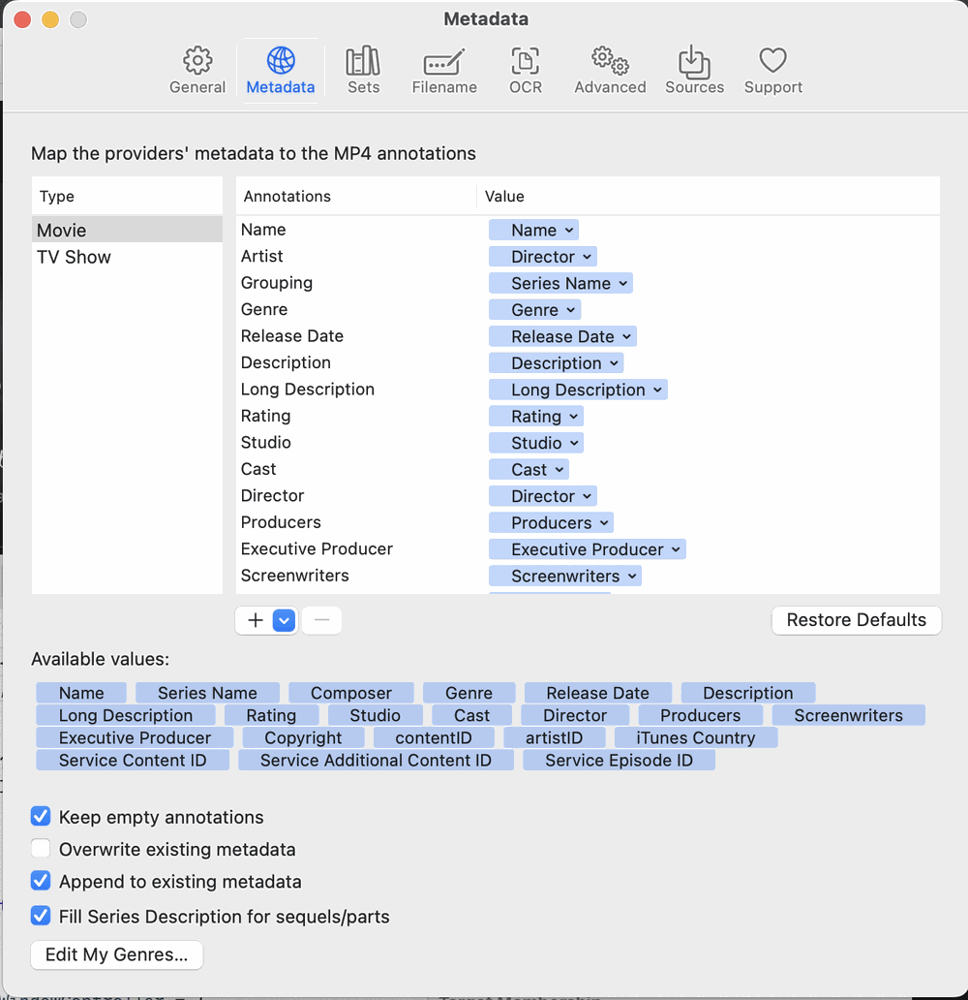

Choose which tags are shown for Movies and TV Shows and in what order. Below the list, Keep empty annotations keeps tags a search found but left blank, Overwrite existing metadata lets a search replace tags a file already has, and Append to existing metadata adds new cover art next to the art already there (the last two exclude each other; with neither ticked, only gaps are filled). The Queue follows these unless its own Existing tags option (see 3.3) says otherwise. Fill Series Description for sequels/parts copies the series description when a title ends in a number or in “Part…”.
